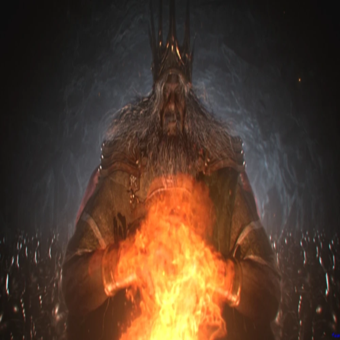
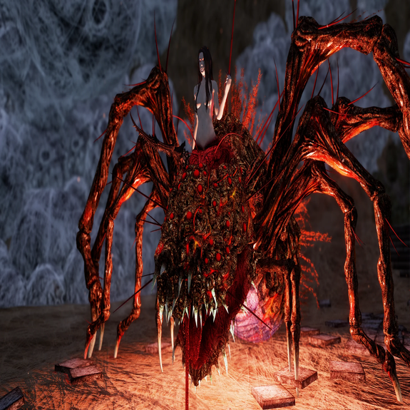
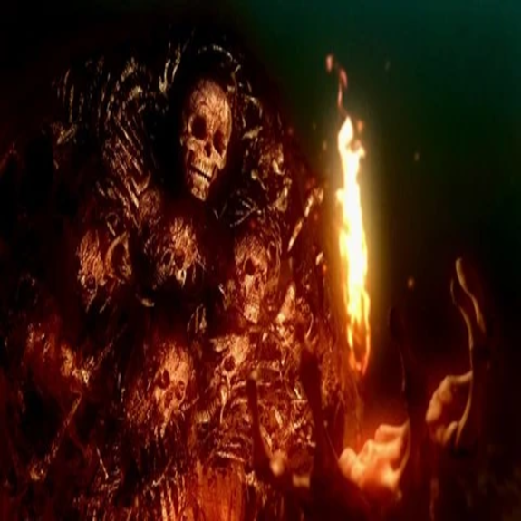
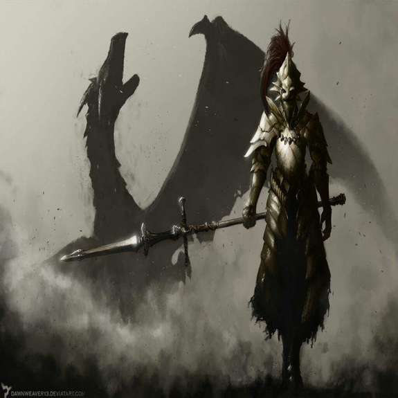
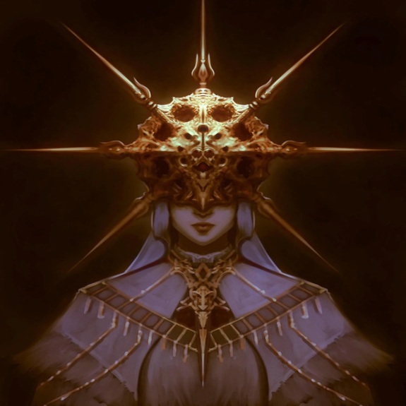
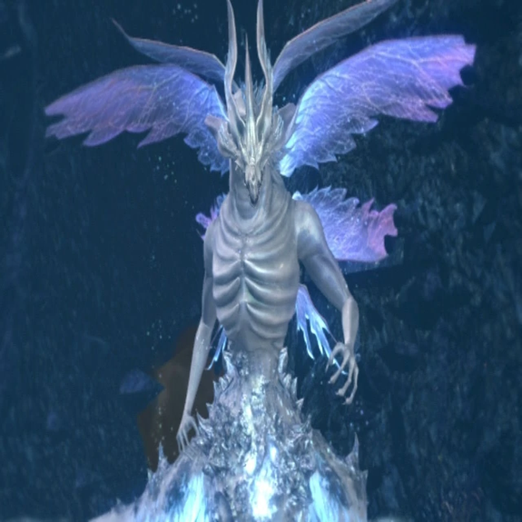
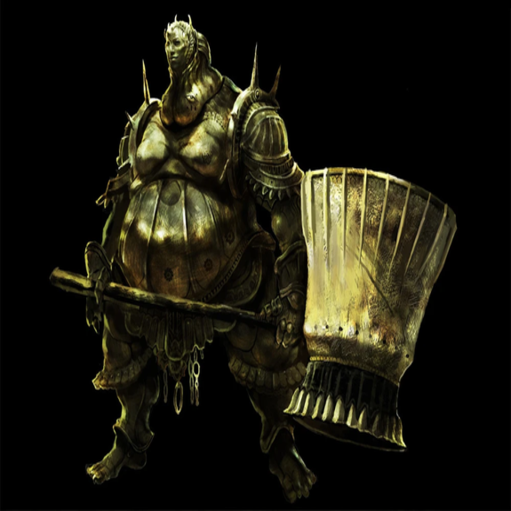

-
Gwyn, O Senhor das Cinzas
Lorde Gwyn usa um impressionante conjunto de cortinas reais, com faixas de ouro nos braços e uma coroa no topo da cabeça. Em seus pés está o que parece ser uma forma de mocassins e tornozeleiras, e ele empunha uma espada grande imbuída do poder da luz e da Primeira Chama, que ele usa para efeito adequado. Seu rosto é o de um homem idoso com olhos calmos, e ele tem uma barba grisalha impressionantemente longa e cabelos da mesma natureza. Quando o Chosen Undead luta contra Gwyn no Forno da Primeira Chama, Gwyn nada mais é do que uma casca vazia com uma aparência abatida, pele carbonizada e olhos vazios.
Life/ 4185 Souls/ 70000 -
Quelaag, a Bruxa do Caos
Quelaag é filha da Bruxa de Izalith e, junto com a maior parte de sua família, não conseguiu escapar da chama caótica e foi corrompida por ela. Devido à exposição à chama, Quelaag e sua irmã se transformaram em criaturas parecidas com aranhas com a parte superior do corpo sendo fundida às costas dos monstros.
Life/ 3139 Souls/ 20000 -
Gravelord Nito
O corpo de Nito é o de um esqueleto humano de tamanho imenso, embora a caixa torácica esteja repleta de pedaços de matéria morta e aberta como resultado. O torso também se inclina para a frente, dando-lhe uma aparência corcunda, e seu verdadeiro crânio está enfiado na matéria morta e nos ossos. Sua perna esquerda é construída como as de um cachorro ou outra criatura de quatro patas, enquanto sua perna direita é humana, dando-lhe uma espécie de desvantagem e reduzindo seu movimento a um mancar lento. Os outros esqueletos apenas o adornam como armadura, com todo o seu torso coberto de costelas e crânios, e braços e pernas pendurados ao seu redor.
Life/ 4317 Souls/ 60000 -
Ornstein, O Matador de Dragões
Ornstein é um dos cavaleiros a serviço do Senhor da Luz do Sol e participou da guerra de seu Senhor contra os Dragões. Ele usava uma armadura dourada feita para se assemelhar a um leão e empunhava uma grande lança cruzada tão forte que era capaz de se enterrar profundamente dentro da pele de um dragão, perfurando suas escamas de pedra e enviando meros humanos voando. Tanto sua armadura quanto sua arma estavam imbuídas do poder do relâmpago para serem eficazes contra dragões.
Life/ 2981 Souls/ 50000 -
Gwyndolin, O Sol Negro
Gwyndolin é o filho mais velho de Gwyn, Senhor da Luz do Sol e uma das divindades que residiam em Anor Londo durante a Era do Fogo, embora sua legitimidade como tal só viesse de ser filho de seu pai. Ele era adorado como o "Deus da Lua Negra" e tinha o título de "Deus, o Sol Negro"
Life/ 2011 Souls/ 40000 -
Seath, o Sem Escamas
Seath é um grande dragão branco que não tem escamas e tem a parte inferior do corpo coberta de cristais. Ele tem um torso liso que é bastante humanóide e no lugar das pernas ele tem vários tentáculos semelhantes a tentáculos. Ele tem seis asas azul-violeta e longos apêndices que se estendem de sua cabeça.
Life/ 5525 Souls/ 60000 -
Smough, O Executor
Smough era o carrasco real de Anor Londo a serviço dos deuses, empunhando um martelo enorme e vestindo uma armadura grotesca. Ele desejava fazer parte dos Cavaleiros de Gwyn, mas foi rejeitado apesar de seu imenso poder. Isso não era apenas porque ele tinha prazer em seu trabalho brutal, tornando-o estranhamente alegre, mas porque ele também moía os ossos de suas vítimas em sua própria alimentação para absorvê-los, enquanto seu martelo se tornava capaz de restaurar a saúde com ataques graças ao seu uso contínuo em seu trabalho.
Life/ 4094 Souls/ 50000